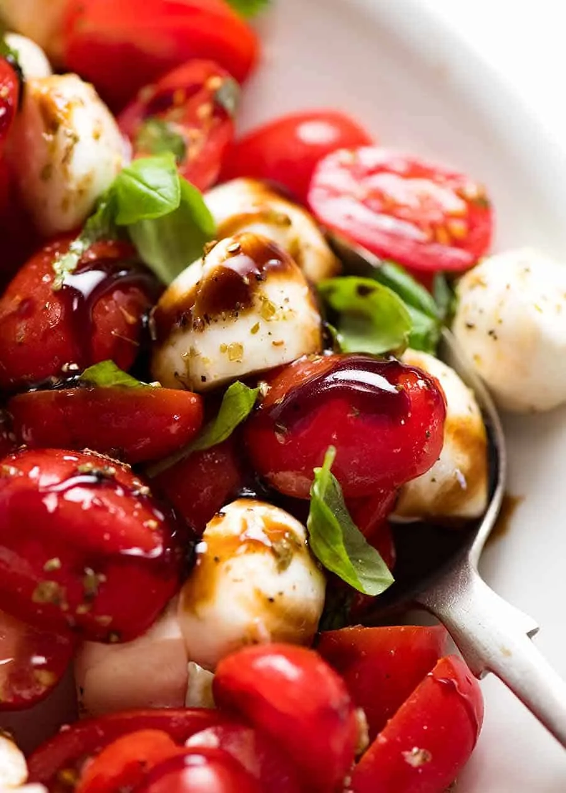
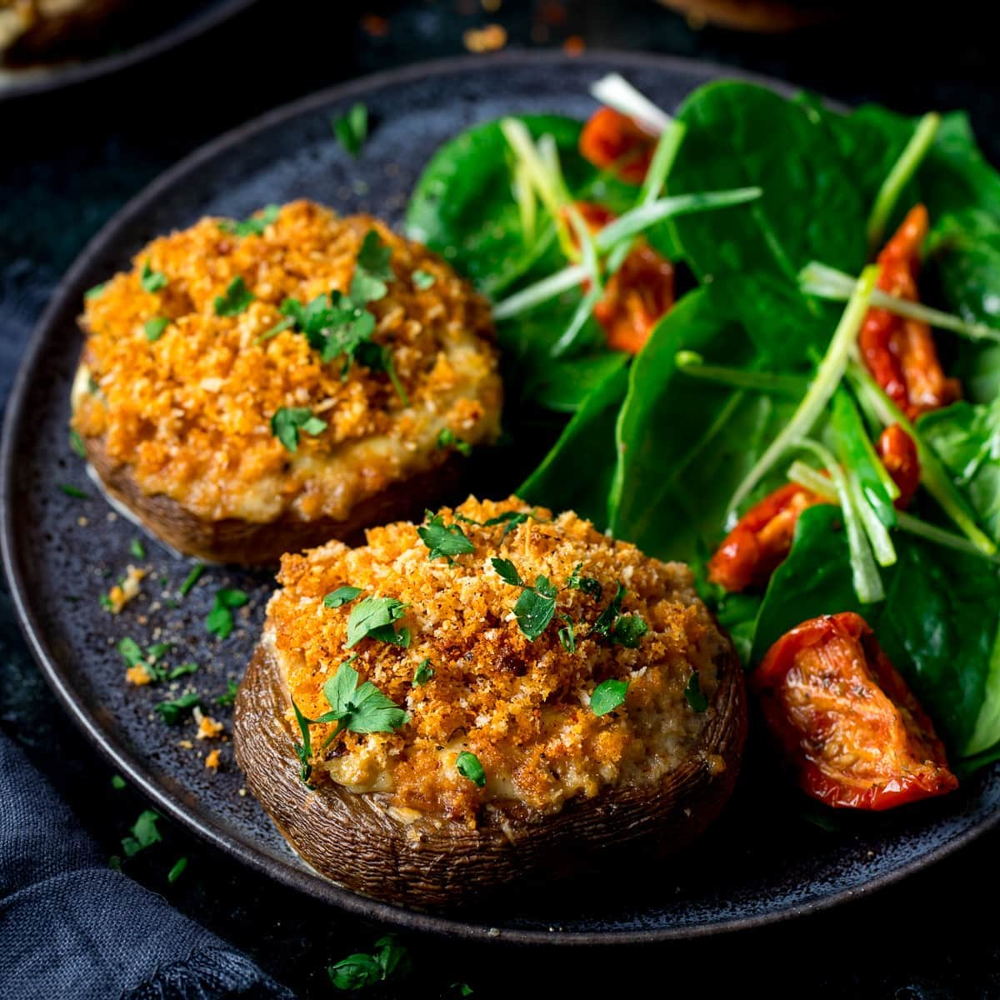

Fresh tomatoes, mozzarella, and basil drizzled with balsamic glaze.

Cheese, cumin, chili powder, and beef.

A mixture of cheesy spinach and garlic, all topped off with golden breadcrumbs.
Fresh tomatoes, mozzarella, and basil drizzled with balsamic glaze.
Cheese, cumin, chili powder, and beef.
A mixture of cheesy spinach and garlic, all topped off with golden breadcrumbs.

Salmon fillet seasoned and grilled to perfection, served with lemon butter sauce.

Fish Tacos al Pastor are a fusion of marinated, grilled or pan-seared fish with al pastor-style spices, topped with pineapple, cilantro, and salsa, served in a tortilla.
Cauliflower Bolognese is a vegetarian twist on the classic Italian sauce, using finely chopped cauliflower instead of meat, simmered with tomatoes, garlic, herbs, and olive oil.
Assorted fruits and marshmallows served with rich chocolate fondue.
Ice cream with a crisp chocolate shell and crushed fortune cookies.

Crispy pastry shells filled with sweet ricotta cream, often with chocolate or candied fruit.